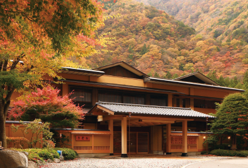

장인 문화가 일본에서 두드러진 이유는 우수한 기술을 가진
사람이 있고, 이를 가업으로 이어 간다는 점을 들 수 있다.
일본에서는 ‘가업을 잇는 것(いえを つぐ)’을 매우 중요하게
생각한다. ‘いえ’는 건물로서의 ‘집(家)’과 발음이 같지만,
‘대를 이어 계승되는 사회 집단’이라는 의미가 있다.
가업은 장남이 계승하는 경우가 가장 많지만, 다른 친척이나
혈연 관계가 없는 사람도 계승할 수 있으며 일을 잘하는 사람을
양자로 삼아 가업을 잇거나 기술을 전승하는 경우도 자주 볼 수
있다.
이러한 모습은 드라마나 영화 소재로도 자주 등장한다.
400년 전통이 있는 절을 이어 갈 차기 주지 스님의 이야기를
그린 드라마나 대대로 이어온 신사의 대를 잇기 위해
‘데릴사위’를 들이는 내용의 영화가 큰 인기를 끌기도 하였다.
이렇듯 가업 계승을 중시한 결과, 일본에서는 역사가 긴
음식점이나 200년 이상 된 기업을 흔하게 볼 수 있으며 다른
나라와 비교해 봐도 장수 기업 수가 매우 많다. 역사가 긴 기업
은 그 자체만으로도 신용이 있다고 생각하기 때문에 가업 계승
은 ‘기술의 전승’인 동시에 ‘신용의 전승’이라고 할 수 있다.

‘게이운 해(서기 705년)’에 개장해,
세계에서 가장 오래된 숙박 시설로
인정받고 있는 야마나시현(山やま梨なし県けん)에
위치한 온천 료칸